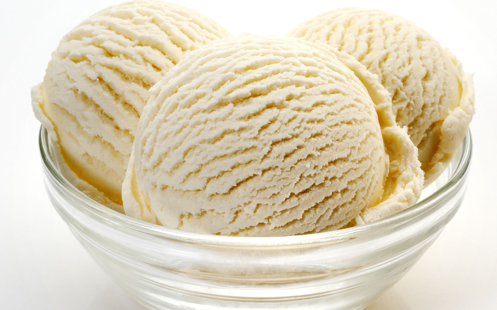

Home
Vanilla Ice Cream

Description
This homemade ice cream is easy to make with just 4 ingredients: pure vanilla extract, milk, heavy whipping cream, and sugar. This American or Philadelphia-style ice cream makes for a brighter, more pronounced vanilla flavor.
- Prep Time: 5 Mins
- Cook Time: 5 Mins
- Additional Time: 2 Hrs 20 Mins
- Total Time: 2 Hrs 30 Mins
- Servings: 4
Ingredients
- 2 ¼ cups milk
- 1 cup heavy whipping cream
- ¾ cup white sugar
- 2 teaspoons vanilla extract
Directions
- Gather all ingredients.
- Stir milk, cream, and sugar in a saucepan over low heat until sugar has dissolved. Heat just until the mixture is hot and a small ring of foam appears around the edge.
- Transfer cream mixture to a pourable container such as a large measuring cup. Stir in vanilla extract and chill mix thoroughly, at least 2 hours. (Overnight is best.)
- Pour cold ice cream mix into an ice cream maker, turn on the machine, and churn according to manufacturer's directions, 20 to 25 minutes.
- When ice cream is softly frozen, serve immediately or place a piece of plastic wrap directly on the ice cream and place in the freezer to ripen, 2 to 3 hours.
- Serve and enjoy!